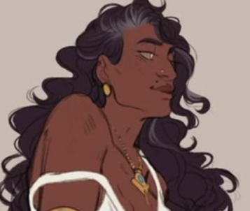

Gabriel
Gabriel
Une main sur le coeur, l'autre tenant une brique..
Hériter d'un combat
Aimer, se battre pour protéger les siens, se battre pour ce que l'on croit juste… Qu'est-ce que cela nous apporte ?
Crever la bouche ouverte, apparemment.
Être battu à mort par ceux qui détiennent le pouvoir. Perdre toute dignité. C'est ce qui est arrivé à Mert. Peu importe où il se trouve désormais, il est là où les mains de ces raclures ne pourront plus jamais l'atteindre, et c'est tout ce qui compte pour Gabriel.
À présent, le combat appartient à quelqu'un d'autre. Il lui appartient.
Histoire
Gabriel est arrivé d'Italie pour terminer ses études de droit à Izmir. C'est là qu'il rencontre Mert, un étudiant qui lui fait découvrir la vrai ville, ses recoins crasseux, et ses véritables combats. Ensemble, ils s'engagent dans les mouvements étudiants et se retrouvent rapidement au cœur de manifestations et de causes qui dépassent largement le cadre de l'université.
À l'automne 1999, Mert est retrouvé mort. Officiellement, ce n'est qu'un fait divers. Pour Gabriel, c'est une injustice de plus, et un crime de haine qui ne sera jamais qualifié comme tel dans les médias.
La non vie
Son engagement finit par attirer l'attention d'Essil, qui fait de lui sa goule.Après plusieurs années de service, il est étreint par celle ci, et devient un membre à part entière de son clan. S'il est difficile de savoir exactement ce qui lui à donné ce droit aux yeux de son clan, le passage dans la légalité de beaucoup de leur affaires dans les temps autour de son étreinte donne surement un avant gout de ses capacités.
Relations
Lignée

Essil, sa sire- Elle le protège encore, meme s'il s'est rapidement intégré dans le clan. Si il vennait à lui arriver malheur, elle n'hésiterai pas à montrer les crocs.
 Ines, la coterie
Ines, la coterie- Il est dans la meme coterie que Ines et Camil, et ils semblent proche. Aucun fiasco, pour l'instant
 Le clan Brujah
Le clan Brujah- La culture soudée du clan, ainsi que son statut de Neonate lui donne le support intégral de son clan.
Trivia
- A terminé ses études de droit en tant que ghoule
- S'habille de manière féminine, mais utilise exclusivement le pronom "il"
- Son arme Brujah est un couteau papillon.